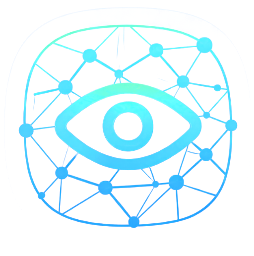

Manual, device-by-device configuration
The service is declared once and Oktavia generates each PE's part and the CE's part from the same declaration. There is no second intent to keep up to date.
For carriers, ISPs and MPLS operators: Oktavia distributes every L3VPN, pseudowire and bandwidth contract to the devices involved, applies the Cisco IOS XR core as a single transaction with commit confirmed, and does not consider the change done until it verifies the service is up.
What it solves
In a provider network, every new service touches several PEs and the customer CE, each with its numbering, its QoS and its BGP session. Oktavia turns that work into one declaration and one reviewed change.
The service is declared once and Oktavia generates each PE's part and the CE's part from the same declaration. There is no second intent to keep up to date.
The customer AS, the RTs, the RD per PE, the /31 PE-CE links, the pseudowire EVI and the subnets are derived from the customer identifier. Two customers do not collide, and the same customer is numbered the same way every time.
Each service's desired YANG configuration is compared with the running config, leaf by leaf, and each service has its own result. IS-IS adjacencies, BFD and the provider BGP sessions are checked on top of that.
Every change goes through the Digital Twin, is approved by a person and is verified after it is applied. The technical record documents each customer's numbering plan, sites, circuits and QoS.
How it works
The customer service is declared in the style of L3SM and L2SM: its sites or circuits and the contracted bandwidth. Oktavia distributes it to every PE and CE.
All IOS XR routers in the core go into a single change: validation on each router's candidate configuration as a dry run, and commit confirmed on all of them.
IS-IS adjacencies, core BGP sessions and xconnects up, then human confirmation. If anything fails, the change is cancelled on every router.
Per-service compliance compares the intent with the running config again, and state checks confirm the service is still up.
Service catalog
Each service has its own desired configuration and its own compliance.
Per customer: VRF, RT and RD, PE-CE eBGP with as-override, and the site LAN on the CE.
Point-to-point circuits, several per PE-CE link, on per-VLAN subinterfaces.
QoS per site or circuit on the PE interface: police inbound and shape outbound, with a dedicated pair of policies per contract.
Level 2 IS-IS underlay with SR-MPLS (prefix-SID), TI-LFA and BFD; the authentication key lives in the vault.
VPNv4 and L2VPN EVPN address families; the EVPN family is added automatically when there are pseudowires.
Management VRF and ACL, SSH and NETCONF, SNMP, NTP, logging and banner.
Model-driven over gRPC dial-out, on IOS XR and IOS XE, to the Oktavia collector.
The CE (Cisco IOS) part of the L3VPN and the pseudowires comes from the same service as the PE part.
Visibility per customer service
One page per customer with its L3VPNs and pseudowires, end-to-end state, QoS contract and diagram.
Ingress PE, VPN label and egress PE, in both directions, also drawn on the Topology.
Traffic and attachment-circuit state on each PE, with the contracted bandwidth as 100%. Over streaming, IOS XR also sends xconnect state.

Argos · Organization flows
When an organization has IOS XR devices or P, PE or RR roles, Oktavia treats it as a provider network: the domains become Transport, Services, Security and Management, and campus flows are hidden. No action that touches the network happens without a person approving it.
Applies the core intent as a network change.
Shows the circuits with their state and provisions a new one: validates VLAN, subnet and endpoints, saves the intent and proposes the change.
Shows and changes bandwidth contracts: validates, saves and proposes the change.
From the CE: reachability to the PE, the PE-CE BGP session, the remote LAN across the L3VPN and the remote CE of the pseudowire.
It answers on the Oktavia server with the team's documents (design, runbooks, changes, security and circuits), the technical record per site, the IOS XR guides from xrdocs and the RFCs for the technologies: L3VPN (RFC 4364), route reflector (RFC 4456), EVPN (RFC 7432), EVPN-VPWS (RFC 8214), Segment Routing (RFC 8402 and 8667) and IS-IS (RFC 1195).
Read the article on local AIThe Oktavia family
The cycle is the same for all of them; what changes is how each one is accessed. Each organization sees the domains of its own architecture without affecting the others.
SSH (CLI) and model-driven streaming on IOS XE
Campus, WAN and customer CE.
NETCONF / YANG
Provider core and PE.
Manager API
Software-defined WAN.
Dashboard API
Cloud-managed branches.
FortiGate over REST API · FortiSwitch over SSH
Perimeter security and campus.
NETCONF
Security and routing.
Roadmap
On-demand Segment Routing traffic engineering, with a color per service.
Data center integration with Cisco ACI.
Let's talk
Proven in the lab with Cisco IOS XR (XRv9000) in the core and Cisco IOS on the customer CE. We walk you through the full cycle and review how it fits your network.